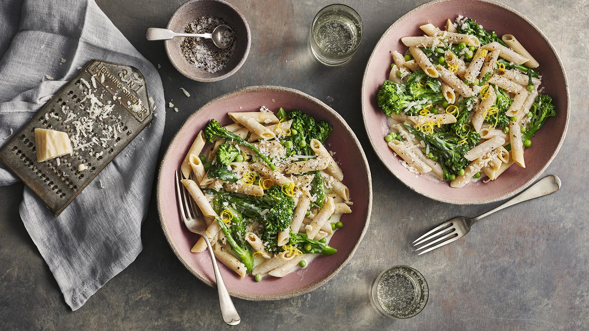
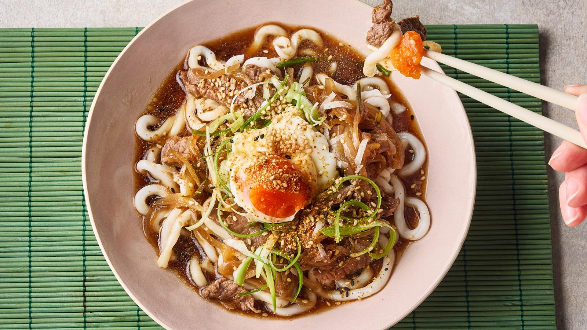
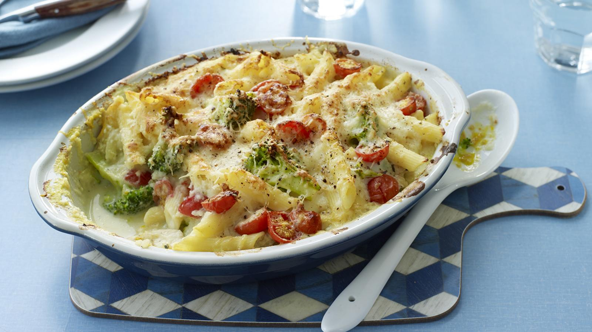
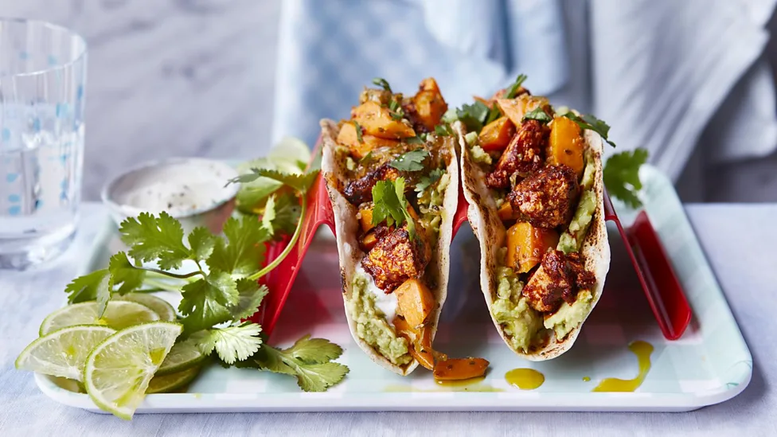
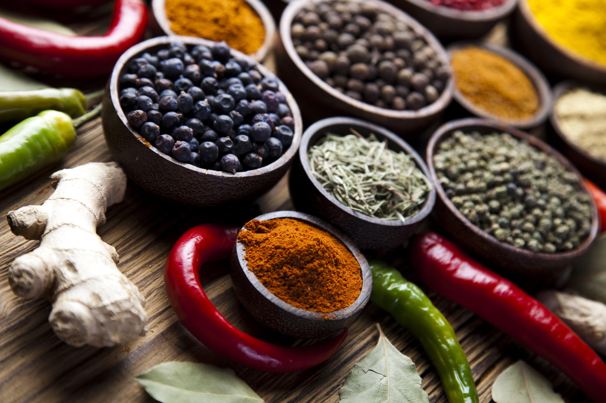

Velkommen til Curious Cooks
.jpg)
Hos Curious Cooks finder du opskrifter lige efter sin smag! Vi er et kollektiv af professionelle kokke og amatør kokke, der brænder for at få vores opskrifter og oplevelser ud til jer
Om det er Food stories eller opskrifter, er der helt klart noget der vækker din interesse!
Stay Curious
Nyligt tilføjet opskrifter

fransk løgsuppe-smag med oksekød

'Let' kyllinge pasta
Nye Food stories

De lækreste tofu tacos fra Mexico
På turen til Mexico fik jeg virkeligt åbnet øjnene for tofu i tacos.

Justin Tsang
Kinesisk chef

Min kulturhistorisk madoplevelse af Indiansk mad
Har du nogensinde prøvet indisk mad? hvis ikke, så læs videre her.

Anjum Anand
Indisk chef
Mad kulturen i Vietnams bjerge
Turen til Vietnam var yderst fantastisk, men det bedste var helt klart madkulturen.

Andrew Wong
asiatisk chef

Jamaicansk style Jerk kylling
Jerk chicken har en fantastisk smag, og sjovt at tilberede samtidig med har det givet mig oplevelse for livet

Ainsley Harriot
Jamicansk chef
Professionelle Kokke
Anjum Anand
Pro-chef
Indisk mad